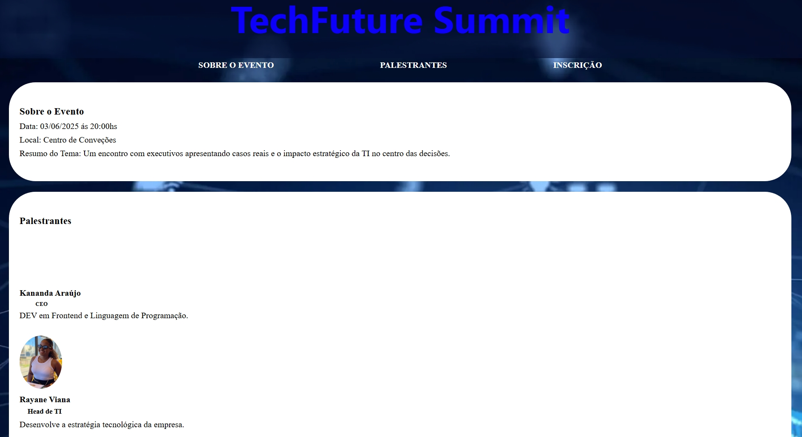
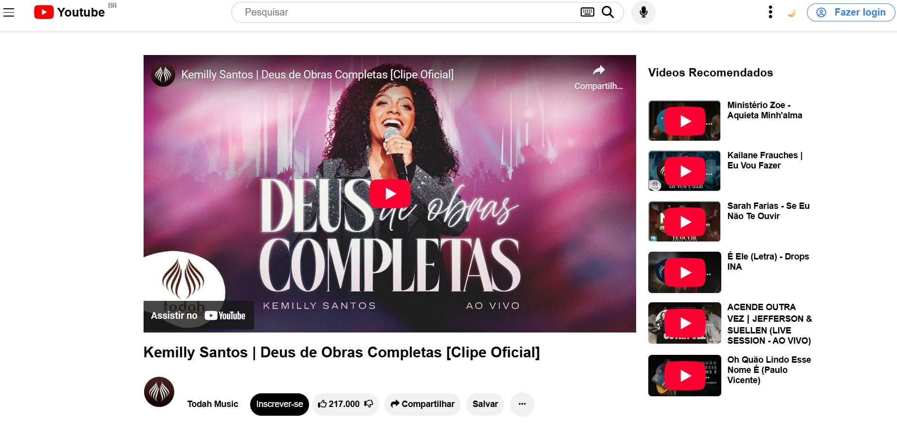

TechSolutions
A TechSolutions, uma startup inovadora focada em soluções tecnológicas para
pequenas e médias empresas aqui em Salvador, está crescendo rapidamente e
precisa urgentemente de uma presença online profissional. Eles ainda não têm um
website e precisam de uma forma rápida e eficiente de apresentar seus serviços e
informações de contato ao público. Como futuros analistas e desenvolvedores de
sistemas, vocês foram contratados como consultores para criar uma primeira versão
da vitrine digital da TechSolutions, Utilizando apenas as tags básicas de HTML.
Ver Projeto

TechConnect
A "TechConnect", uma startup de tecnologia, deseja lançar uma landing page para promover seu próximo evento: o "TechFuture Summit", um encontro de
desenvolvedores e designers para discutir tendências em tecnologia e design. O objetivo da página é atrair participantes e fornecer informações claras e
visualmente atraentes sobre o evento, como data, local, palestrantes e inscrições.
Os alunos, divididos em dupla atuarão como desenvolvedores Front-End responsáveis pela criação dessa landing page. O foco está em aplicar conceitos de HTML
e CSS, considerando UI e UX, boas práticas de programação e a validação de dados nos formulários
Ver Projeto

Réplica do Youtube
Este projeto é uma réplica simplificada da interface do YouTube, desenvolvida com HTML, CSS e JavaScript. O principal objetivo foi praticar conceitos de front-end, como layout responsivo, organização em cards, barra de navegação fixa, modo claro/escuro e uma estrutura moderna.
Além disso, conta com uma seção de vídeos recomendados, simulando a experiência da plataforma original.
É uma ótima demonstração da minha atenção aos detalhes visuais e funcionais, e da capacidade de aplicar técnicas atuais de desenvolvimento web.
Ver Projeto